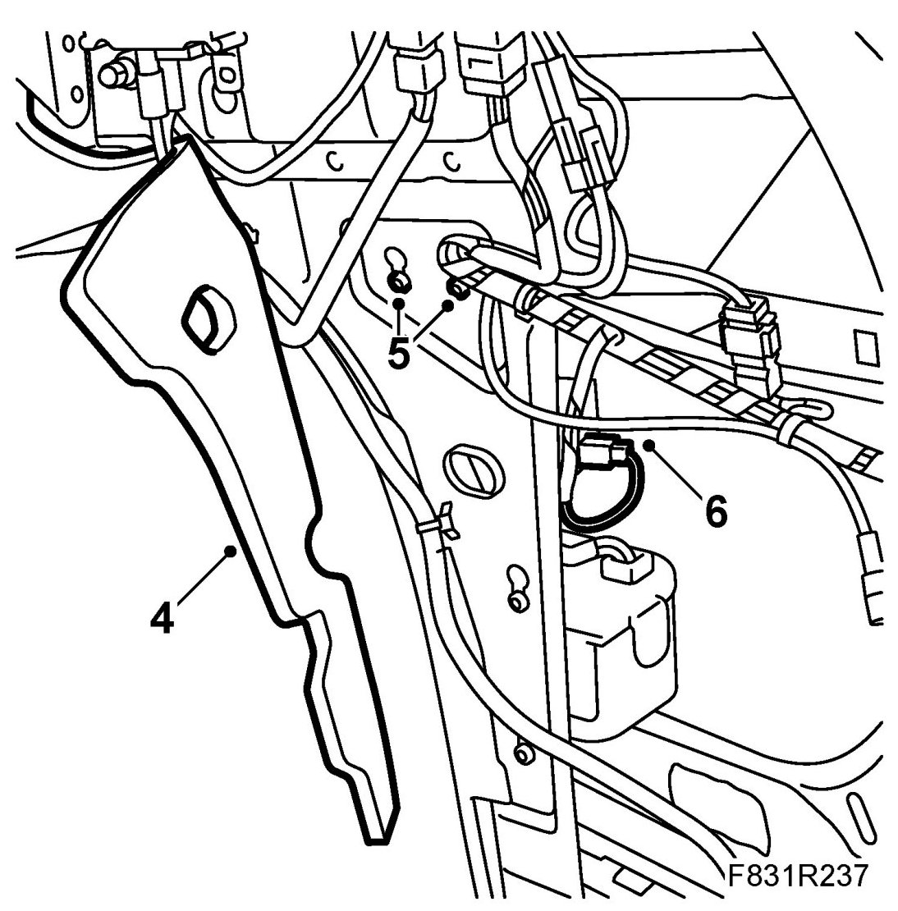
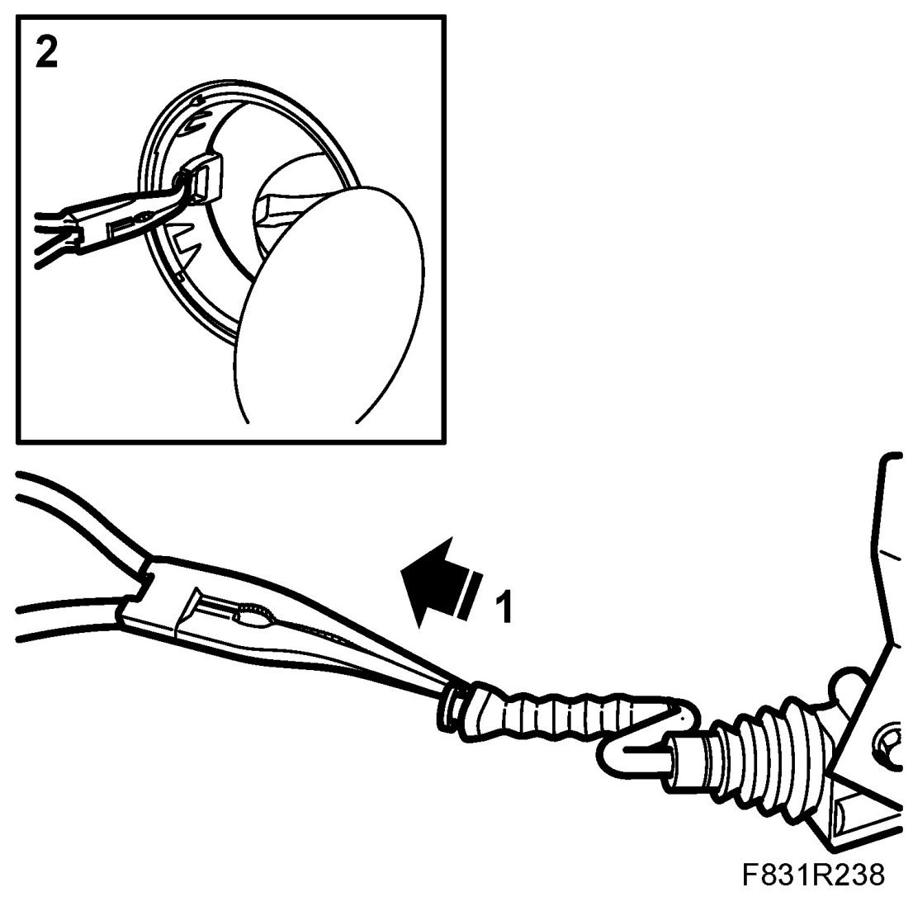
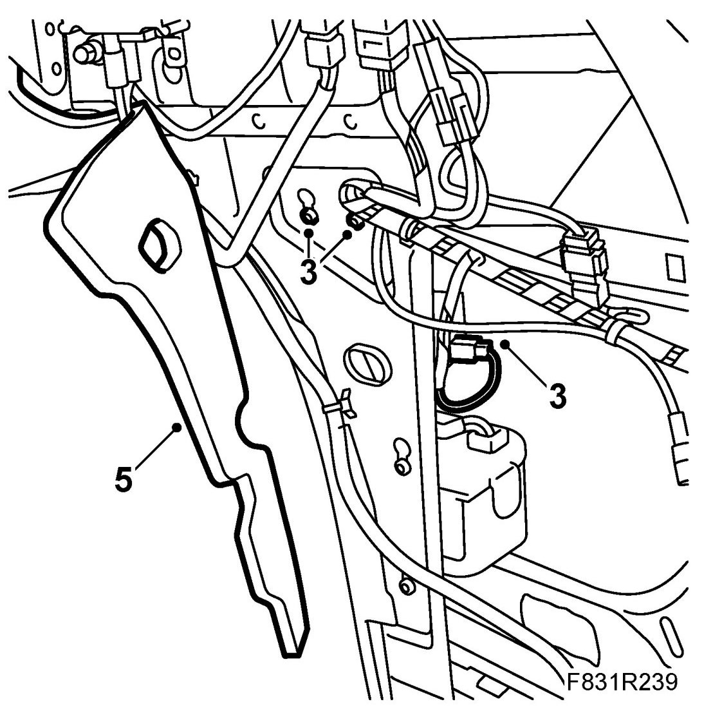
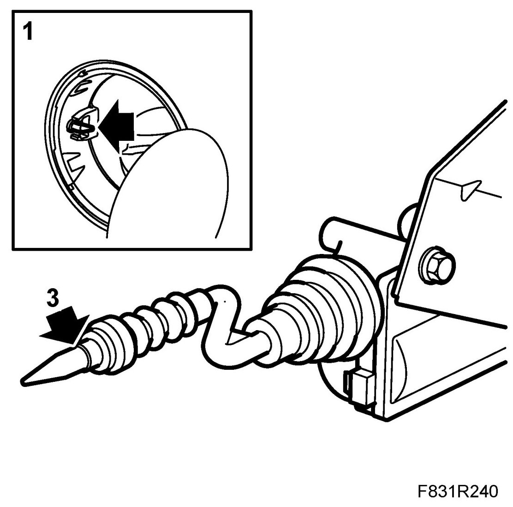
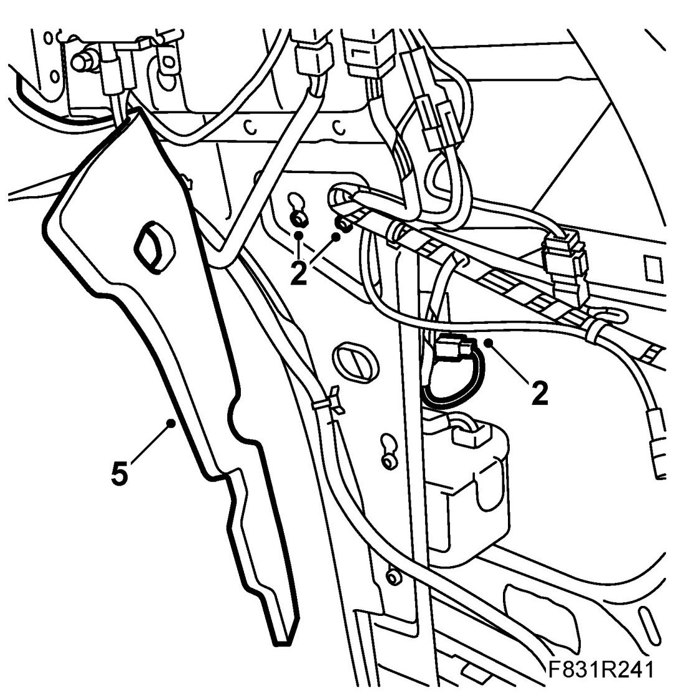

Solenoid, Fuel Filler Flap, 5D (434 a)
Solenoid, Fuel Filler Flap, 5D (434 a)
To remove
1. Open the boot lid.
2. Remove C-pillar trim, 5D.
3. Remove Rear side trim, 5D.
4. Fold away the insulation mat.

5. Undo the solenoid retaining bolts and lift up the solenoid. Pull off the rubber bellows from the tank filler neck.
6. Unplug the connector.
Fitting the solenoid with an old bellows
1. Pull out the solenoid bellows slightly.

2. Insert a pair of pointed pliers through the filler cap neck from outside. Grip the front bellows on the solenoid and pull it out through the whole.
3. Place the solenoid in the mounting and screw it on. Plug in the connector.

4. Check the operation of the tank flap lock.
5. Fold back the insulation mat.
6. Fit Rear side trim, 5D.
7. Fit C-pillar trim, 5D.
Fitting the solenoid with a new bellows
1. Pull in the bellows through the hole in the filler cap neck using a pair of pliers.

2. Place the solenoid in the mounting and screw it on. Plug in the connector.

3. Cut off the end of the bellows as marked.
4. Check the operation of the tank flap lock.
5. Fold back the insulation mat.
6. Fit Rear side trim, 5D.
7. Fit C-pillar trim, 5D.
8. Close the tailgate.